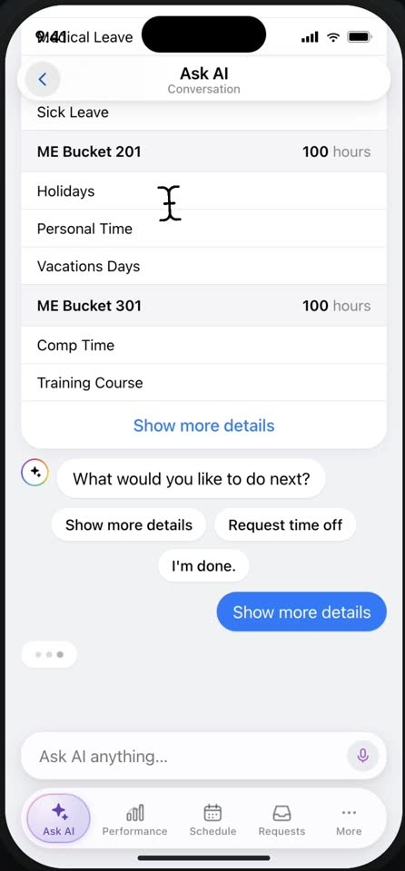
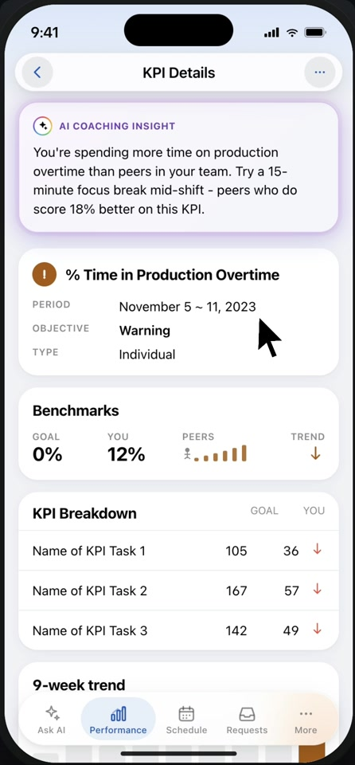
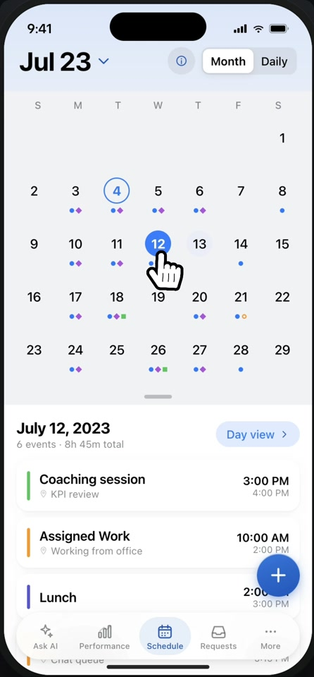
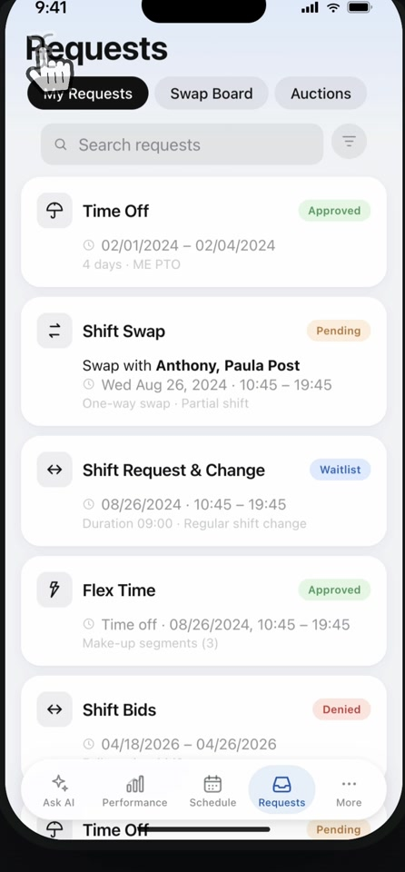
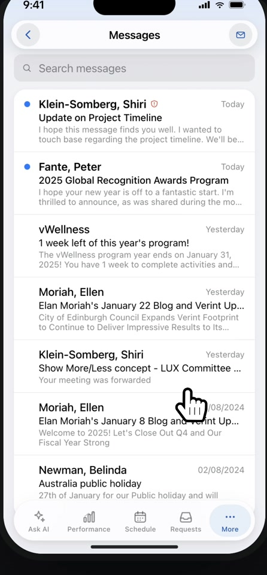

My Verint turned a fragmented, inaccessible mobile experience into a unified, AI-powered app for 10,000+ contact center employees.
For years, Verint ran two separate mobile apps - one for supervisors, one for agents. Both had grown out of the desktop WFE product as afterthoughts. Mobile was treated as a free add-on, so there was no dedicated budget, no design owner, and no design system. The work passed from hand to hand, accumulating inconsistencies and accessibility gaps over time.
The catalyst arrived in 2024: a company mandate to integrate Ask Verint - an AI agent - into the mobile experience. You can't build something new on a broken foundation, so we rebuilt the foundation first.
The structural problems were long: no design system, no accessibility baseline, no documentation, and no access to all existing flows. Some parts of the app were effectively invisible to design.
The hardest challenge was organizational. Stakeholders wanted to move every desktop capability to mobile - one to one. I disagreed. Desktop and mobile serve different use cases. A supervisor planning next month's schedule does that from a desktop. A contact center agent adding 15 minutes to their shift does it from their phone, on the floor, between calls. Cramming full desktop features into a small screen - without asking whether they belong there - was the wrong brief. Changing that framing took time and required more than logic to move.
The first move was combining the two apps into one, with role-based capability views - supervisors and agents each get what they need, not everything at once.
Alongside that, we built My Verint's first mobile design system: color tokens, typography scales, responsive behaviors, motion specs, and full documentation. It gave the team a shared language that didn't exist before.
The biggest outcome is Ask Verint. 85% of users now complete all their tasks through the AI tab - through natural language, without navigating menus at all. The design work made that possible; the data validated every decision we'd made about mobile-first scope.
My Verint shipped as a single unified app for iOS and Android, replacing both legacy apps. The mobile design system gave every team a shared foundation to build on - something that had never existed before.
The number that tells the whole story: 85% of users complete all their tasks through Ask Verint - without touching a single screen. A contact center agent can check their schedule, request time off, and review their KPIs through a single conversation. The product changed not just how the app looks, but how people work.
Bring data to stakeholder conversations, not wireframes. I spent weeks arguing for mobile-first scope based on instinct and logic. Usage analytics and a few user interviews - showing where and how people actually used the app - would have replaced those debates with a single slide and moved the project faster.
Involve real contact center agents earlier. Our testing happened too late in the process, which meant some assumptions got baked in before we could validate them. Access to actual users early on - not internal proxies - would have let us pressure-test the core design direction before committing to it.